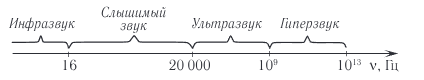
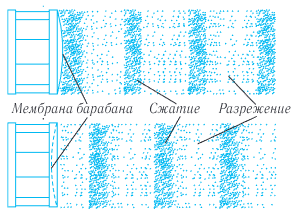
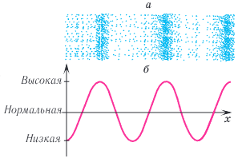
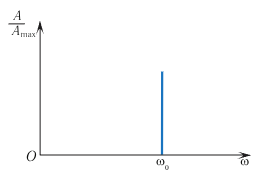
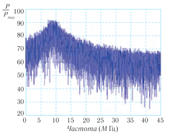
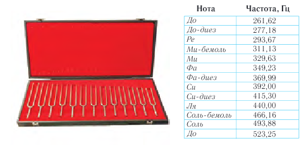

Видеоурок по теме
§ 6. Звуковые волны
Звуковые волны (звук) окружают человека с первых дней его жизни. Звуки позволяют людям общаться между собой, выражать эмоции, наслаждаться музыкальными шедеврами. Как это происходит? Каковы основные свойства звуковых волн?
Упругие волны, вызывающие у человека слуховые ощущения, называются звуковыми волнами или просто звуком. Человеческое ухо воспринимает в виде звуковых ощущений колебания от 16 до 20 000 Гц. Раздел физики, в котором изучаются звуковые явления, называется акустикой.
Звуковые волны классифицируются по частоте следующим образом (рис. 41):
инфразвук (ν < 16 Гц); слышимый человеком звук (16 Гц ≤ ν ≤ 2,0·10⁴ Гц); ультразвук (2,0·10⁴ Гц < ν < 1,0·10⁹ Гц); гиперзвук (10⁹ Гц < ν < 10¹²/10¹³ Гц).

Звуки (звуковые волны) приносят человеку жизненно важную информацию — с их помощью мы общаемся, наслаждаемся музыкой, узнаем по голосу знакомых людей. Мир окружающих нас звуков разнообразен и сложен, однако мы достаточно легко ориентируемся в нем и можем безошибочно отличить пение птиц от шума городской улицы.
Что представляет собой звук и каким образом он возникает?

Рассмотрим в качестве источника звука барабан (рис. 42). Деформированная в результате удара мембрана барабана будет совершать колебания с некоторой частотой. В результате этого мембрана создает попеременно сжатие и разрежение в прилегающей к ней области воздуха, и образуется продольная волна, которая распространяется в воздухе с течением времени.

Наглядную информацию о звуковой волне в некоторый момент времени дает график зависимости плотности воздуха от координаты (рис. 43). Горбы на этом графике соответствуют сжатию, а впадины — разряжению воздуха. В процессе распространения звуковой волны с течением времени изменяются такие характеристики среды, как плотность и давление (см. рис. 43).
Для распространения звуковых волн необходима среда с упругими свойствами. Они хорошо распространяются в упругих средах, таких как газ, жидкость, металлы, стекло, кристаллические материалы. Однако звуковые волны быстро затухают в пористых материалах (поролон, войлок, вата). Такие материалы используют для звукоизоляции. Лучшим изолятором звука является вакуум (пустота), так как результаты экспериментов показывают, что звуковые волны в пустоте (вакууме) не распространяются.
Основными физическими характеристиками звука являются интенсивность и спектральный состав (спектр).
Понятие интенсивность звука характеризует энергию, переносимую звуковой волной.
Интенсивность звука, улавливаемого ухом человека, лежит в огромных пределах: от ~ 10⁻¹² Вт/м² (порог слышимости) до ~ 1 Вт/м² (порог болевого ощущения). Человек может слышать и более интенсивные звуки, но при этом он будет испытывать боль. Звуки еще большей интенсивности могут привести к травме.
Минимальная интенсивность, при которой ухо человека перестает воспринимать звук, называется порогом слышимости. Наиболее чувствительно наше ухо к волнам частотой примерно 3 кГц, так как при этой частоте интенсивности порядка 10⁻¹² Вт/м² уже достаточно, чтобы ухо восприняло звук. А для того чтобы услышать звук на частоте 50 Гц, его интенсивность должна быть примерно в 100 000 раз больше, т. е. быть порядка 10⁻⁷ Вт/м².
Таким образом, для возникновения звуковых ощущений необходимо:
• наличие источника звука;
• наличие упругой среды между источником звука и ухом. При этом частота колебаний источника звука должна находиться в пределах 16—20 000 Гц;
• мощность звуковых волн должна быть достаточной для того, чтобы вызвать ощущение звука.
Еще одной основной характеристикой звука является его спектр. Спектром называется набор частот звуков различных колебаний, образующих данный звуковой сигнал. Спектр может быть сплошным или дискретным.
Сплошной спектр означает, что в данном наборе присутствуют волны, частоты которых заполняют весь заданный спектральный диапазон.
Дискретный спектр означает наличие конечного числа волн с определенными частотами и амплитудами, которые образуют рассматриваемый сигнал.
По типу спектра звуки разделяются на музыкальные тона и шумы.
Музыкальный тон создается периодическими колебаниями звучащего тела (камертон, струна) и представляет собой гармоническое колебание одной частоты. Спектр гармонического колебания представляет собой одну вертикальную линию (рис. 44).


Шум — совокупность множества разнообразных кратковременных звуков (хруст, шелест, шорох, стук и т. п.) — представляет собой наложение большого числа колебаний с близкими амплитудами, но различными частотами (имеет сплошной спектр) (рис. 45).

Физическим характеристикам звука соответствуют его субъективные характеристики, связанные с его восприятием ухом человека. Это обусловлено тем, что восприятие звука — процесс не только физический, но и физиологический. Человеческое ухо воспринимает звуковые колебания определенных частот и интенсивностей по-разному, в зависимости от чувствительности органов слуха.
Основными физиологическими характеристиками звука являются громкость, высота и тембр.
Громкость (степень слышимости звука) определяется как интенсивностью звука (амплитудой колебаний в звуковой волне), так и различной чувствительностью человеческого уха на разных частотах. Наибольшей чувствительностью человеческое ухо обладает в диапазоне частот от 1000 до 5000 Гц.
Высота звука определяется частотой звуковых колебаний, обладающих наибольшей интенсивностью в спектре.
Для музыкального звука (созвучия) основной тон соответствует наименьшей частоте (рис. 46). Все остальные тоны называют обертонами. Тембр (оттенок звука) зависит от того, сколько обертонов присоединяются к основному тону и какова их интенсивность и частота.
По тембру мы легко отличаем звуки скрипки и рояля, органа и флейты, голоса людей (табл. 3) и т. д.
| Источник звука | ν, Гц | Источник звука | ν, Гц |
|---|---|---|---|
| Мужской голос: бас баритон тенор | 80—500 80—350 100—400 130—500 | Орган Флейта Скрипка Арфа | 22—16 000 260—15 000 260—15 000 30—15 000 |
| Женский голос: контральто меццо-сопрано сопрано колоратурное сопрано | 170—1400 170—780 200—1000 250—1300 260—1400 | Барабан Контрабас Виолончель Труба Саксофон Рояль | 90—14 000 60—8000 70—8000 60—6000 80—8000 90—9000 |
Скорость звука зависит от упругих свойств, плотности и температуры среды. Чем больше упругие силы, тем быстрее передаются колебания частиц соседним частицам и тем быстрее распространяется волна. Поэтому скорость звука в газах меньше, чем в жидкостях, а в жидкостях, как правило, меньше, чем в твердых телах (табл. 4).
| Среда | t, °C | v, м/с | Среда | t, °C | v, м/с |
|---|---|---|---|---|---|
| Воздух | 0 | 331 | Лед | 0 | 3280 |
| Воздух | 20 | 343 | Сталь | 20 | 5050 |
| Вода | 20 | 1490 | Стекло | 20 | 5300 |
| Глицерин | 20 | 1920 | Чугун | 20 | 3850 |
| Ртуть | 20 | 1450 |
Скорость звука в идеальных газах с ростом температуры растет пропорционально T , где Т — абсолютная температура. В воздухе скорость звука v = 331 м/с при температуре t = 0 °C и v = 343 м/с при температуре t = 20 °C. В жидкостях и металлах скорость звука, как правило, уменьшается с ростом температуры (исключение — вода).
Нажмите на иконку или кнопку для прослушивания.